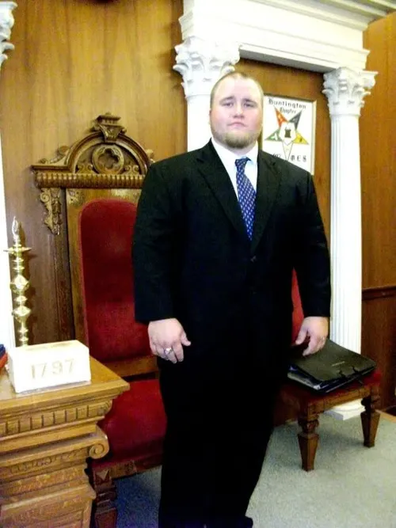
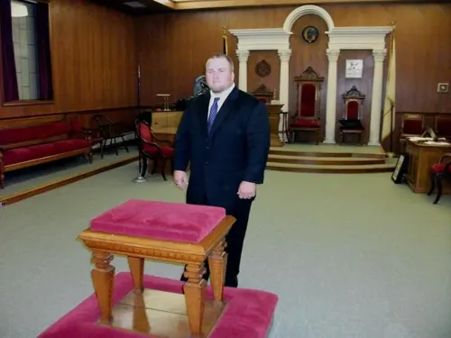

Fellowship Lodge & the Grand Lodge of Massachusetts
September 2010 (to confirm) · Bridgewater & Boston, Massachusetts
Draft pending George

Had a great trip. Drove to Bridgewater, Massachusetts to return a Masonic book (from 1945) & for fellowship.
Made it to the Grand Lodge of Massachusetts in Boston to present SK Corr with a commemorative coin/medal from South Carolina’s AFM.


